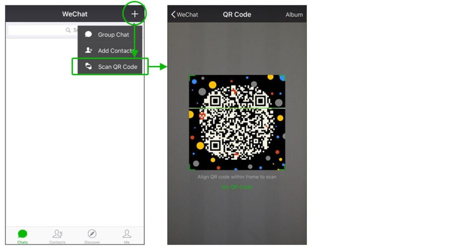

AutoBand
AutoBand
Hongrui Wang<hrwang96@gmail.com>, Xingxing Yang<digdongaa@gmail.com>
1. PubPub Link
https://nime.pubpub.org/pub/va67dba0/draft?access=bh7ld0yv
2. ABSTRACT
God created the foundations of real world day by day. So do the human create an artificial-intelligent art world block by block. This showcase demonstrates several generative art models sequentially, which shows how AI can generate rhythms, melodies, accompaniments and motions. Besides, this is a real-time interactive application, which enables users to collaborate with AI to turn human's scratch ideas into a complete art work with AI's imagination. We want to explore the role of machine learning as a tool in the creative process. Human create an imaginary world and teach AI to sing and dance. In contrary, the AI world will help human to create art with its vast imagination.
At first, user can clap or b-box to express basic beat patterns. And the application use GrooVAE model[1] to turn it into a real-drum rhythm with the input beat. GrooVAE can make a drum clip sound and “feel” like a human drummer’s performance. Then, user sings a piece of melody based on the generated drum loop. The application will transcribe the singing melody and be as your muse to continue the melody with MelodyRNN[2] model. Furthermore, it will also serve as an Autoband, which analyzes the chord progression and generates accompaniments with MusicVAE model[3]. Finally, the application also invites an imaginary dancer to dance to the whole song, with the help from music-oriented dance video synthesis model[4] to generate the motions.
In this showcase, we show the development of AI in the generative art domain. And we build a real-time interactive application to let human compose music together with AI’s imagination. Besides, we also show AI’s potential to combine different forms of art, such as rhythm, melody and dance, into a compact performance.
3. Program Notes
God created the foundations of real world day by day. So do the human create an artificial-intelligent art world block by block. This showcase demonstrates several generative art models sequentially, which shows how AI can generate rhythms, melodies, accompaniments and motions. Besides, this is a real-time interactive application, which enables users to collaborate with AI to turn human's scratch ideas into a complete art work with AI's imagination. We want to explore the role of machine learning as a tool in the creative process. Human create an imaginary world and teach AI to sing and dance. In contrary, the AI world will help human to create art with its vast imagination.
4. BIO(S)
Hongrui Wang is an audio algorithm engineer. Her research interest includes music generation, speech enhancement and natural language understanding. She received a Bachelor's Degree from Anhui University and a Master’s Degree in Applied Statistics from Fudan University.
Xingxing Yang is a programmer and a musician.Many parts of her research interest is in computer assisted audio/music/arts creation.She received a Bachelor's Degree from Shanghai Conservatory of Music and a Master's Degree in Music, Science and Technology from Stanford University.
5. LINKS
video example link: https://vimeo.com/532547034
showcase link:

6. INSTRUCTIONS
We have an interactive mobile demo. you can experience the demo via your phone. To run this demo, you will need to install Wechat on your phone.

If you have Wechat, just scan the QR code above and follow the instructions and you're all done. If you do not have Wechat, go to App Store and download Wechat. Click on the top right plus button, select 'Scan QR Code' and scan the QR code above, you shall be ok to go.
Open WeChat and scan the showcase link in part three. Wait for several seconds for initialization. (If it takes more than two minutes, exit then re-scan the link.)
Firstly, clap or bbox a two-bar rhythm pattern after the initial beat. Then it will play the generated drum loop according to your recoding.
Secondly, hum a piece of melody based on the drum loop. The machine will play your hum and continue it with piano.
Thirdly, it will directly generate accompaniment to that and play the complete song.
Finally, a pretty dancing boy will dance to your work. Just enjoy his show!

7. ACKNOWLEDGEMENTS
The authors would like to thank Derong Lin who help with the website visualization design.
Reference
[1] Gillick, Jon, et al. "Learning to groove with inverse sequence transformations." International Conference on Machine Learning. PMLR, 2019.
[2] Adam Roberts, Jesse Engel, Colin Raffel, Ian Simon, and Curtis Hawthorne. MusicVAE: Creating a palette for musical scores with machine learning, March 2018. https://magenta.tensorflow.org/music-vae.
[3] Roberts, Adam, et al. "A hierarchical latent vector model for learning long-term structure in music." International Conference on Machine Learning. PMLR, 2018.
[4] Ren, Xuanchi, et al. "Music-oriented Dance Video Synthesis with Pose Perceptual Loss." arXiv preprint arXiv:1912.06606 (2019).